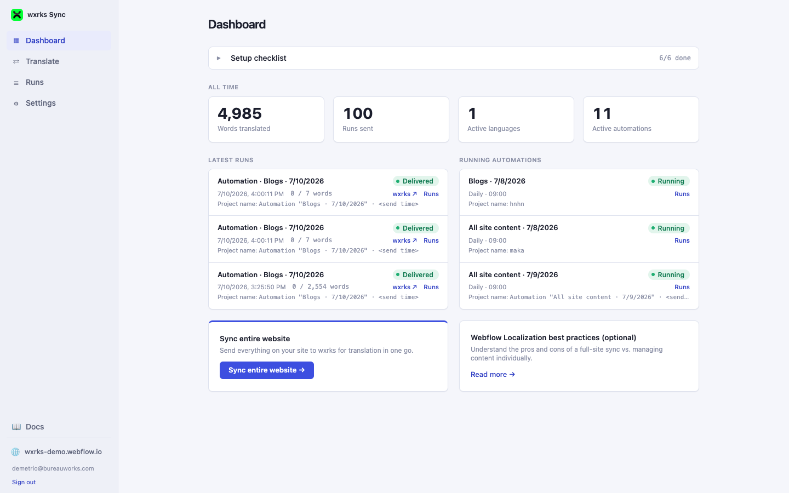

01 · Getting Started
The Dashboard
The Dashboard is the app's home screen: a collapsible setup checklist (it tucks itself away once everything's done), your all-time stats, and a live summary of recent activity.

The setup checklist
Eight checks, each showing Done, Optional, or a Set up link if it still needs attention. The checklist collapses to a single "N/N done" row automatically once the required checks all pass — click it to expand again any time:
- Webflow connected — the Webflow site this account is linked to, with its live URL. This is established the first time someone signs in with Webflow.
- Localization enabled — the target languages this app can translate into. These come directly from the locales you've enabled in Webflow's own Localization settings, not a separate list — see Connecting Your Accounts.
- Automatic field adjustment — how many fields, across how many collections, this app has automatically identified as translatable text (versus, say, number or image fields, which are skipped automatically). You can still exclude specific fields by hand — see Content & Field Rules.
- wxrks connected — your wxrks access key/secret, validated live against wxrks before being saved, and re-checked live every time you open the Dashboard (so a key regenerated on wxrks's own side shows up as broken here right away, not silently).
- Webflow webhook health — only required once you have at least one recurring automation (otherwise shown as Optional); confirms Webflow is actually notifying this app about new/changed content.
- wxrks webhook registered — confirms wxrks has delivered at least one translation completion event to this app — see Connecting Your Accounts.
- Timezone & work unit naming (optional) — a read-only reminder of where to change the timezone used for schedules and timestamps.
- LLM connector (optional) — an Anthropic API key, only needed as a fallback for transliterating slugs in scripts the built-in transliteration table can't handle on its own (Korean, Japanese, Chinese, Arabic, Hebrew). Skippable entirely if you don't use Slug handling's "Transliterate" mode, or only translate into scripts it already covers (Latin, Cyrillic, Greek).
All-time stats
Four numbers, computed from your account's real history — no separate reporting page needed:
- Words translated — total words delivered back to Webflow across every run.
- Runs sent — how many translation projects have been created in total.
- Active languages — how many target locales are currently configured.
- Active automations — how many recurring automations are enabled right now.
Latest runs & running automations
Below the stats, two panels summarize what's actually happened recently:
- Latest runs — your 3 most recent sends (one-time or automation-triggered), with delivery status and a word count. Click Runs on any row to jump straight to its full detail on the Runs & Automations page.
- Running automations — up to 3 recurring automations currently active, so you can see at a glance what's scheduled without leaving the Dashboard.
Nothing here requires action once everything shows Done. The checklist
exists purely to guide first-time setup and collapses itself out of the way — an
already-configured account can ignore it and go straight to
Translating Content.